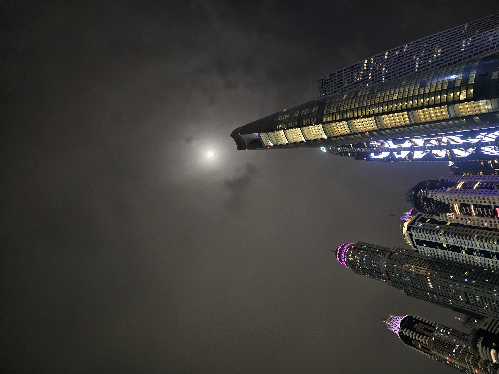
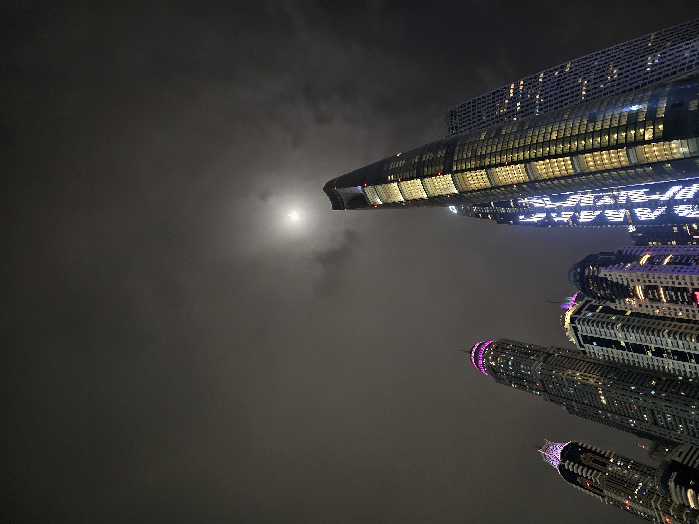

Destinos imperdíveis
Planeje roteiros completos por meio de guias criados para viajantes curiosos. Dos cartões-postais às preciosas descobertas fora do radar, você encontra sugestões de itinerários, hospedagem e melhores épocas para visitar.
Phuket, Tailândia
Phuket foi minha introdução ao sudeste asiático e mergulhei na cultura local logo nos primeiros dias. Participei de uma aula de muay thai, assisti a um campeonato eletrizante e experimentei pratos inusitados com frutos do mar. Entre os treinos e sabores, aproveitei o resort à beira-mar e me deixei levar pelas praias da ilha.


Dubai, Emirados Árabes Unidos
Dubai foi sinônimo de luxo e experiências únicas. Fui a uma festa na marina, subi o Burj Khalifa para tomar café enquanto o sol nascia e encerrei a viagem celebrando em um iate gigantesco. Cada momento tinha um cenário cinematográfico e essas imagens resumem esse brilho.

 

Rio de Janeiro, Brasil
No Rio caminhei pelo calçadão, mergulhei na praia e vivi o futebol intensamente. Assisti ao meu Vasco no Maracanã, conheci São Januário por dentro e terminei os dias celebrando a energia carioca à beira do mar. As fotos capturam essa mistura de paixão, sol e torcida.